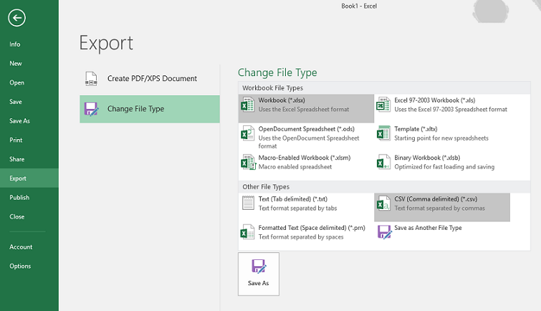
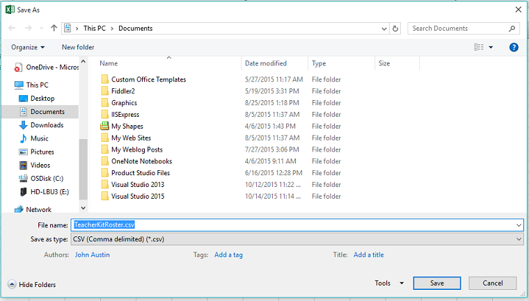
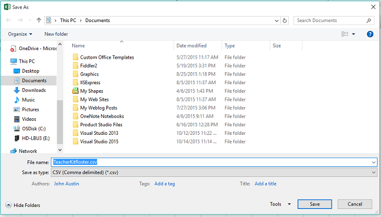

Our CSV generator tool helps you import a class roster into Moodle or TeacherKit by providing a worksheet table for adding your students. When you're ready, our generator makes a CSV (comma separated values) file that you can save in your Office 365 OneDrive account and then import into Moodle or TeacherKit.
Select your service
Select the new worksheet you just created to see the roster table.
Add your students to the table to complete the roster.
Ready to export your roster?
To export your roster, use Excel's export feature to convert the roster table to a comma separated value (CSV) file and save it. After you save the file, you can import the CSV file to the service of your choice.- Click "File" on the Excel menu. The Info page opens.
- Click "Export" on the left side command list to open the Export page.
- Under the Export header, click "Change file type"
- Under Other FileTypes, click CSV (Comma delimited)
- Give your .csv file a name and a save location


